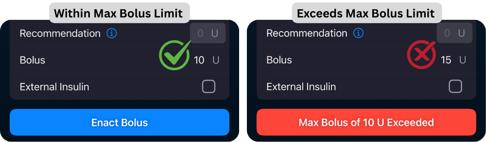

Units and Limits
Highlights
- Max IOB = Increase above 0 before closing the loop
- Max Bolus = Max bolus you give for a meal
- Max Basal = 4x highest hourly basal
- Max COB = Maximum carbs active at any given time
Glucose Units
Select either mg/dL or mmol/L.
All settings descriptions and screen information will be adjusted to match your selection here.
Max IOB
Default: 0 units
Important Information
This must be set to a value greater than 0 for any insulin to be administered above your current set basal rate.
If this remains at 0, Trio can suspend your insulin to prevent lows, but can only administer enough insulin to return you to your current basal rate amount.
This is the maximum amount of Insulin on Board (IOB) above your profile basal rates from all sources - positive temporary basal rates, manual or meal boluses, and SMBs - that Trio is allowed to accumulate to address an above target glucose.
If a calculated amount exceeds this limit, the suggested and/or delivered amount will be reduced so that active Insulin on Board (IOB) will not exceed this safety limit.
Tip
You can still manually bolus above this limit, but the suggested bolus amount will never exceed this in the bolus calculator
Max Bolus
Default: 10 units
Setting Limits: 0.5-30 units
This is the maximum bolus allowed to be delivered at one time. The calculator caps its recommendation using this setting. Remote and Shortcut bolus commands also use it in their shared validation; it is not limited to the Treatments screen.
If you attempt to request a bolus larger than this, the bolus will not be accepted or proceed. So if your max bolus is set to 5U but you enter a 6U bolus, the "Enact Bolus" button will turn red and display a warning message. You will be unable to proceed until you lower your bolus to within this limit.

Tip
Most set this to their largest meal bolus, then adjust if needed.
Max Basal
Default: 2 units
Setting Limits: 0.5-30 units
This is the maximum basal rate allowed to be set or scheduled. This applies to bothe automatic temp basal rates, profile basal rates, and manual temp basal rates.
Tip
Generally, users enter a value that is 4 times their highest hourly basal rate
For Medtronic Users:
You must also manually set the max basal rate on the pump to match this value
Max COB
Default: 120 grams of carb
Setting Limits: 0-300 g
This setting defines the maximum amount of Carbs On Board (COB) allowed at any given time for Trio to use in dosing calculations. If more carbs are entered than allowed by this limit, Trio will cap the current COB in calculations to this Max COB setting and remain at this max until all remaining carbs have shown to be absorbed or 6 hours has passed, whichever comes first.
For example, if Max COB is 120g and you enter a meal containing 150g of carb, your COB will remain at 120g until the remaining 30g have replaced absorbed carbs.
Minimum Safety Threshold
Default: Set By Algorithm
Setting Limits: 60 - 120 mg/dL
Trio uses a Safety Threshold to prevent insulin dosing when your current glucose reading is too low. This threshold is always active, but you can increase this threshold from the system-determined value by entering a value into this setting in Trio.
The system-determined value is based on this calculation:
The threshold is a safety limiter function. If blood sugar at any point is predicted to go below this value, Trio will suspend insulin delivery (SMBs are halted and Temp Basal of 0 U/hr set) and wait until forcasting says otherwise. Increasing this setting can be useful if you are experiencing a high number of hypoglycemia events. Please review the OpenAPS documents if you want a better understanding of how it is used.
This setting allows you to choose a higher threshold setting than the default. Note that you cannot choose something lower than the default setting for a certain blood glucose target.
Bill has set a BG target of 110 mg/dl. In his Trio Dynamic Settings, he has set his threshold to 65 mg/dl. Will Trio use the default threshold or the minimum safety threshold he set?
Here are the formulas you'll need:
Default Safety Threshold:
Then, compare that value to the Minimum Safety Threshold
Default Safety Threshold or or Minimum Safety Threshold
Now, enter in Bill's values
Answer
Because Trio's default threshold setting is 75 mg/dL for a 110 mg/dL blood glucose target, and that is greater than Bill's Minimum Safety Threshold, Trio will use the higher target of 75 mg/dL and ignore this setting.
Bonus Question: Assuming Bill's target stays at 110 mg/dL, what would Bill have to set his Minimum Safety Threshold to for it to be used by Trio?
Tip
Basal may be resumed if there is negative IOB and glucose is rising faster than the forecast
Return to New User Setup
Saved versus effective Max IOB
Low Glucose Suspend and Basal Testing derive effective Max IOB 0 while retaining the saved preference. Basal Testing additionally changes effective sensitivity settings. These mode constraints do not establish a universal limit for every manual bolus entry path. See Dosing Modes and the calculator safety gates.
The Max Bolus picker accepts 0.5–30 U in 0.5 U steps in DecimalPickerSettings.swift; available pump-specific settings and rounding can impose further constraints.
1.0.2 source references
- F02 — Mode overrides differ from the documented manual basal-testing recipe
- F06 — Calculator safety gates and backdated-carb handling need explicit documentation
- F10 — Shortcut boluses use shared safety checks beyond the permission toggle